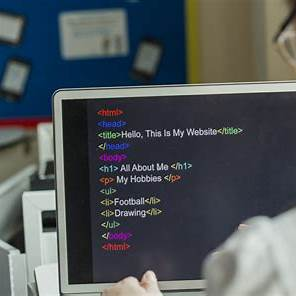
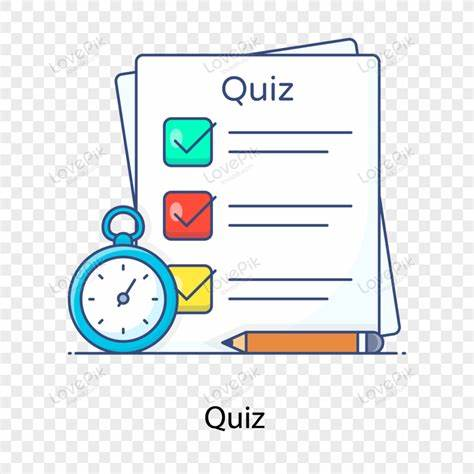

Welcome to Yen Ka Academy.
In this lesson, you will practice basic HTML tags.
This is important information and this is emphasized text.
Keep practicing every day. Small steps lead to big results.
HTML stands for HyperText Markup Language. It is not a programming language. It is a markup language used to structure content on the web. When you open a website, the browser reads the HTML file and displays the content in a readable format. The browser understands tags like headings, paragraphs, links, and images, and it places them on the page based on the structure you write.
Think of HTML like the skeleton of a human body. It gives shape and meaning to the content. Without structure, a webpage would be just a messy block of text. With HTML, you can clearly separate titles from paragraphs, highlight important words, and organize your ideas into sections.
Headings help your reader understand what the page is about. Usually, a page has one main heading using h1. Then you can use h2 for section titles, and h3 for smaller topics inside a section. Good headings make your page easier to scan, easier to learn from, and more professional.
Paragraphs are used for normal text. They are great for explanations, stories, examples, and instructions. When you write long content, it is better to split it into multiple paragraphs so it becomes easy to read. Even if your content is correct, people may not read it if it looks too crowded.
Sometimes you want to change how text looks to make meaning clearer. You can use bold to highlight important words, and italic to add emphasis or show special terms. In modern HTML, strong is often used for text that is important, not just visually bold. Also, em is used to emphasize text in a meaningful way.
You already used superscript and subscript. These are useful for math, science, and notes. For example, you can write H2O for water, or 10² for "ten squared". These small details make your content more accurate and easier to understand.
Your goal is to practice writing clean HTML. Start by adding a new section about yourself. Write a heading like “About Me” and then write two long paragraphs. In the first paragraph, explain why you want to learn web development. In the second paragraph, describe your learning plan for the next 30 days. Use bold to highlight key words like your goals, and use italic to emphasize one important sentence.
Next, add another section called “My Daily Routine”. Write 5 to 8 lines of text in a paragraph, and use to put each routine item on a new line. For example: “07:00 - Review notes”, “07:30 - Practice typing”, “08:00 - Build small HTML page”. This helps you practice both paragraphs and line breaks.
Q1: What is the purpose of HTML?
Q2: What is the difference between h1 and h2?
Q3: When should you use strong instead of b?
Q4: Write one example of superscript and one example of subscript.
